Topic 7-01: Visualization
Zuguang Gu z.gu@dkfz.de
2025-05-31
Source:vignettes/topic7_01_visualization.Rmd
topic7_01_visualization.RmdORA result
Single ORA result
library(GSEAtopics)
data(p53_dataset)
expr = p53_dataset$expr
condition = p53_dataset$condition
library(genefilter)
tdf = rowttests(expr, condition)
diff = rownames(expr)[abs(tdf$statistic) > 2]
diff = convert_to_entrez(diff)## gene id might be SYMBOL (p = 0.680 )We use the GO BP gene sets.
## gene_set n_hits n_genes n_gs n_total log2fe z_score p_value
## 8046 GO:1901700 90 472 1704 18986 1.0871488 7.768513 4.119520e-12
## 1197 GO:0006952 92 472 1949 18986 0.9250489 6.687653 9.514894e-10
## 2066 GO:0014070 55 472 920 18986 1.2658750 6.974000 1.519856e-09
## 4185 GO:0042592 85 472 1767 18986 0.9523099 6.589271 1.966785e-09
## 505 GO:0002684 62 472 1140 18986 1.1293835 6.603855 5.000041e-09
## 5777 GO:0051707 80 472 1659 18986 0.9558352 6.397024 5.824162e-09
## p_adjust description
## 8046 3.783368e-08 response to oxygen-containing compound
## 1197 4.369239e-06 defense response
## 2066 4.515739e-06 response to organic cyclic compound
## 4185 4.515739e-06 homeostatic process
## 505 7.084985e-06 positive regulation of immune system process
## 5777 7.084985e-06 response to other organismLet’s start with the enrichment table from the ORA analysis.
The mostly-used type of plot is to use simple statistical graphics for a small set of pre-selected gene sets.
par(mar = c(4.1, 20, 4, 1))
barplot(tb$n_hits[1:10], horiz = TRUE, names.arg = tb$description[1:10], las = 1)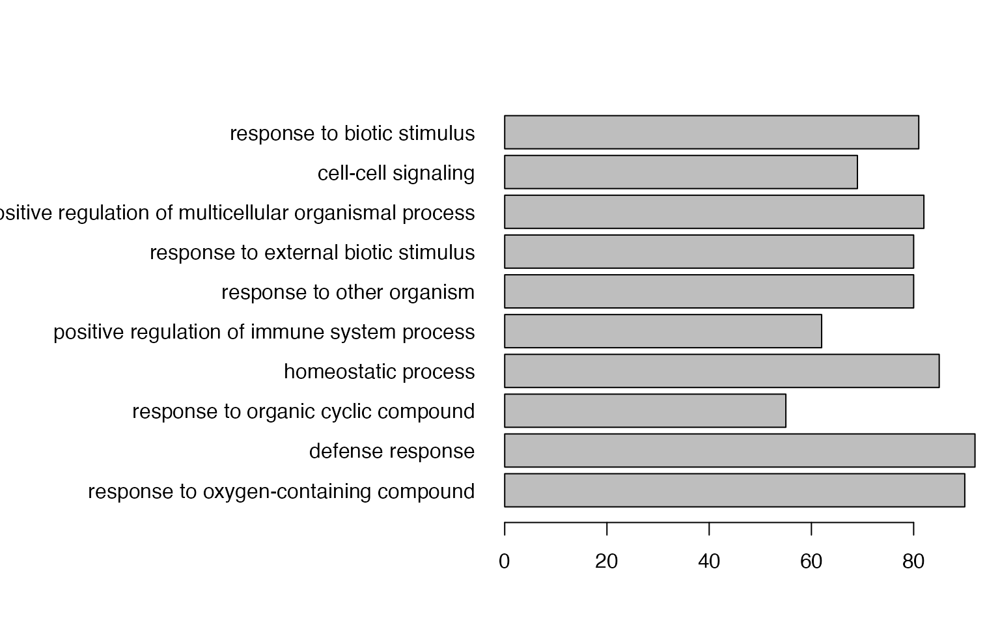
Using ggplot2 is a better idea for visualizing data.
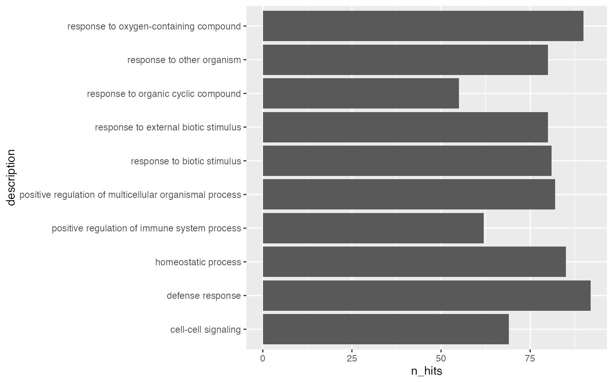
Number of DE genes in gene set may not be a good statistic, more commonly used statistics are log2 fold enrichment or -log10 p.adjust.
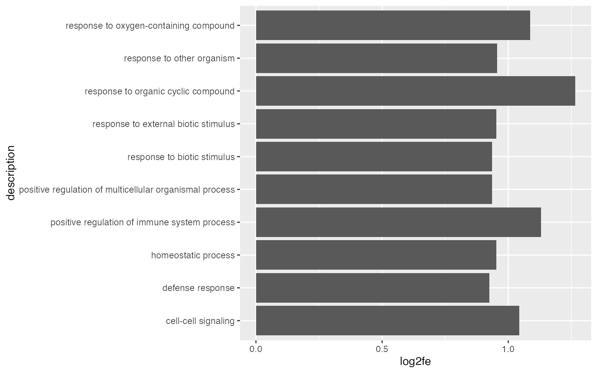
It is also common to add the p-values/adjusted p-values to the bars.
ggplot(tb[1:10, ], aes(x = log2fe, y = description)) +
geom_col() +
geom_text(aes(x = log2fe, label = sprintf('%1.e', p_adjust)))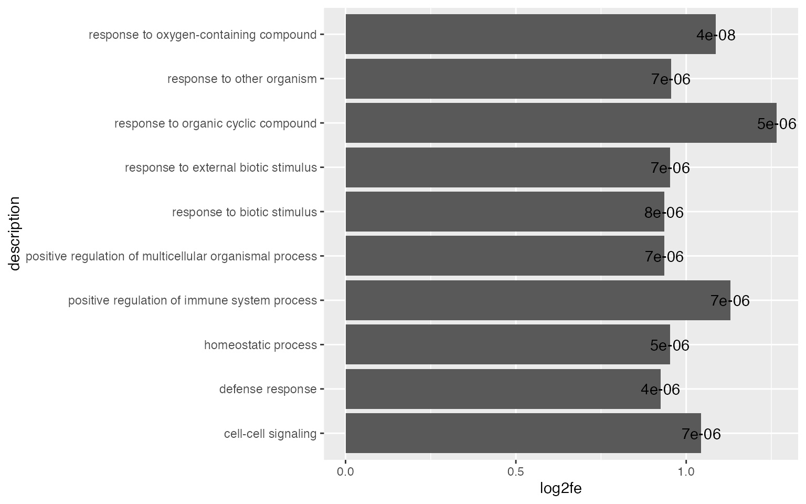
By default, ggplot2 reorders labels alphabetically. You can set the name as a factor and specify the order there.
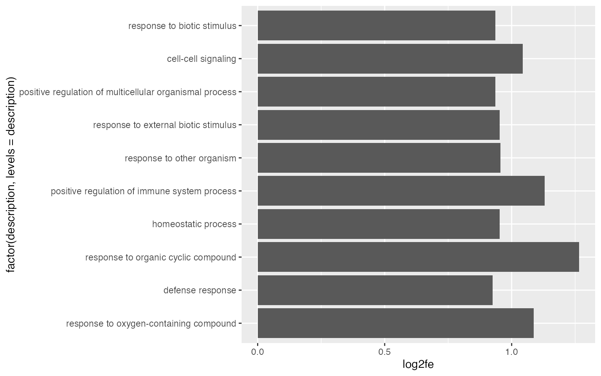
Points are also very frequently used.
ggplot(tb[1:10, ], aes(x = log2fe, y = description)) +
geom_point() +
xlim(0, max(tb$log2fe[1:10]))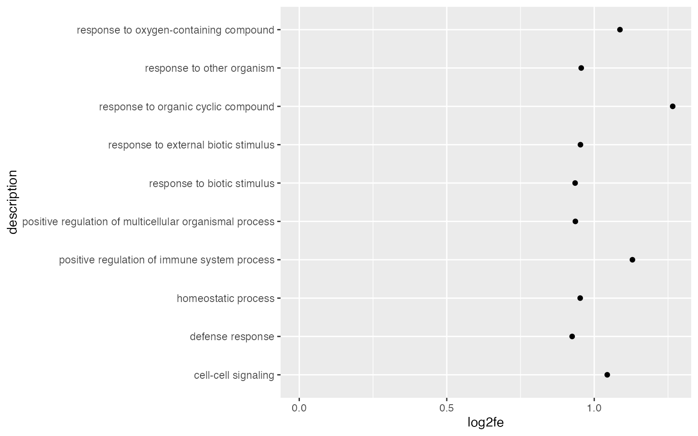
Using dot plot, we can map a second statistic to the size of dots.
ggplot(tb[1:10, ], aes(x = log2fe, y = description, size = n_hits)) +
geom_point() +
xlim(0, max(tb$log2fe[1:10]))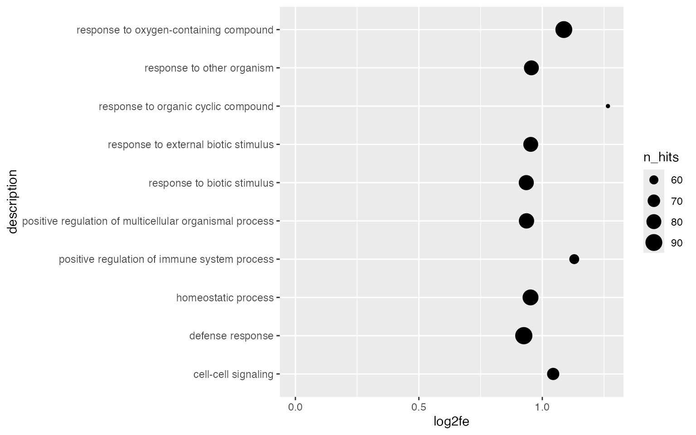
Maybe Connecting to the baseline can enhance the visual effect of the magnitude of the enrichment.
ggplot(tb[1:10, ], aes(x = log2fe, y = description, size = n_hits)) +
geom_point() +
geom_segment(aes(x = 0, xend = log2fe, y = description, yend = description), lwd = 1) +
xlim(0, max(tb$log2fe[1:10]))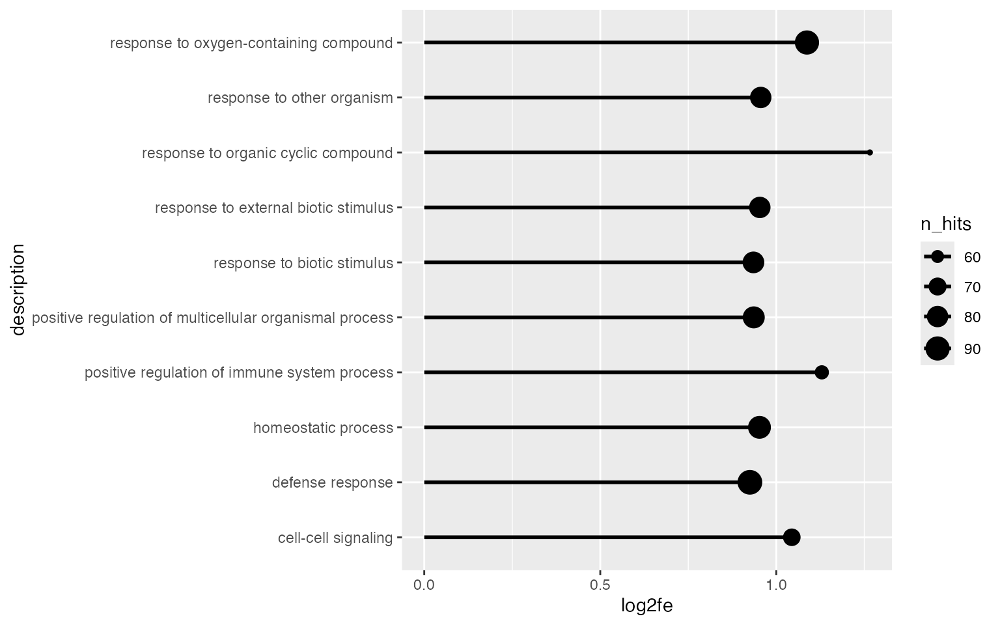
Even more, we can map a third statistic to the dot colors.
ggplot(tb[1:10, ], aes(x = log2fe, y = description, size = n_hits, col = n_hits/n_gs)) +
geom_point() +
xlim(0, max(tb$log2fe[1:10]))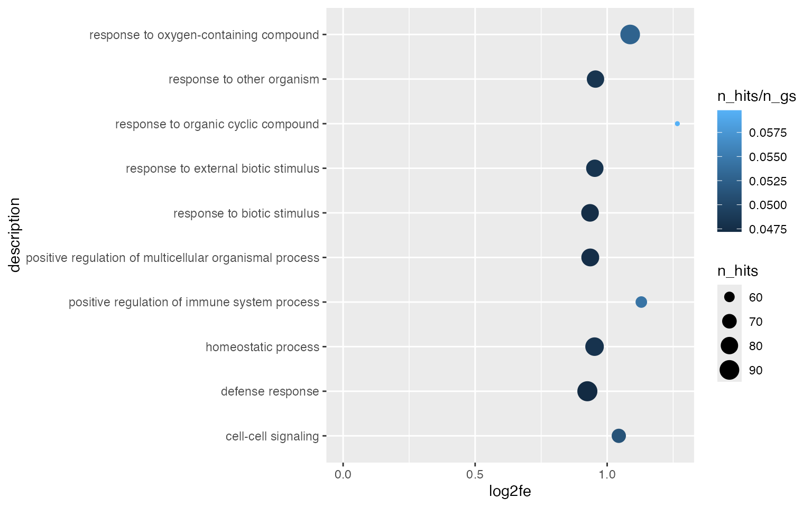
A volcano plot which is -log10(p.adjust) vs log2 fold enrichment:
ggplot(tb, aes(x = log2fe, y = -log10(p_adjust))) +
geom_point(col = ifelse(tb$log2fe > 1 & tb$p_adjust < 0.001, "black", "grey")) +
geom_hline(yintercept = 3, lty = 2) +
geom_vline(xintercept = 1, lty = 2)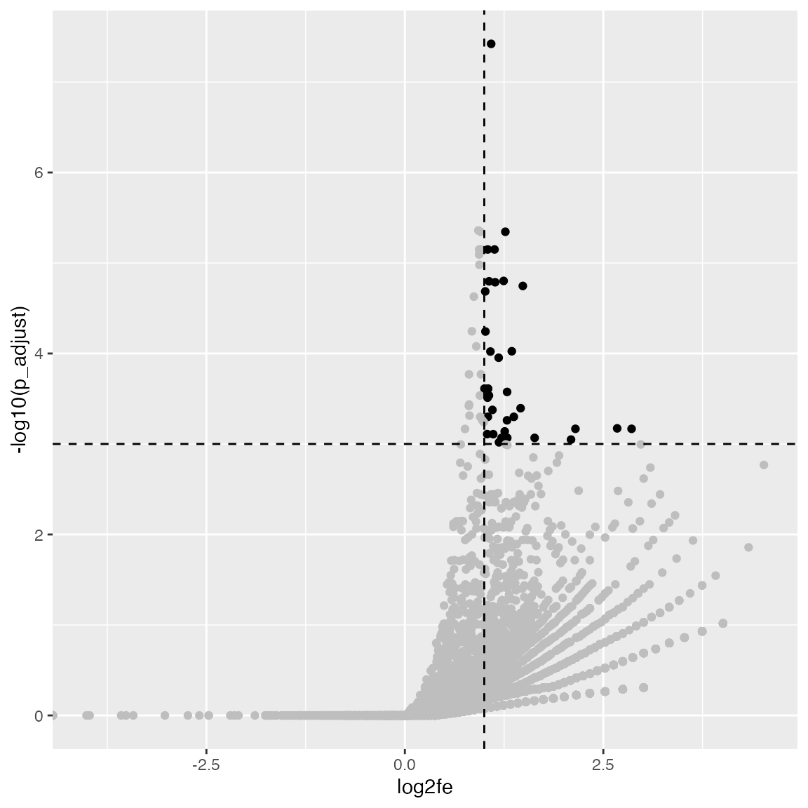
With the volcano plot, we can easily see the preference of enrichment to the sizes of gene sets.
ggplot(tb, aes(x = log2fe, y = -log10(p_adjust), color = n_gs, size = n_hits)) +
geom_point() +
scale_colour_distiller(palette = "Spectral")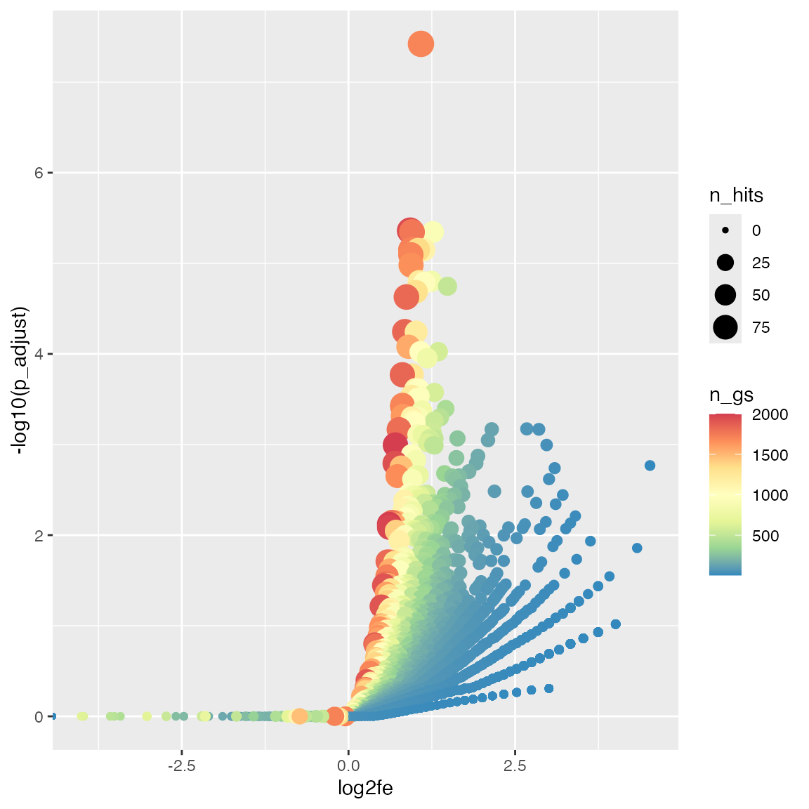
Multiple ORA results
To visualize multiple ORA enrichment tables in one plot, we need to first prepare a data frame which combines results for a pre-selected gene sets.
tbl = readRDS(system.file("extdata", "lt_enrichment_tables.rds", package = "GSEAtopics"))
set.seed(666)
terms = sample(tbl[[1]]$gene_set, 10)
tb = NULL
for(nm in names(tbl)) {
x = tbl[[nm]]
x = x[x$gene_set %in% terms, colnames(x) != "geneID"]
x$sample = nm
tb = rbind(tb, x)
}
ggplot(tb, aes(x = sample, y = description, size = -log10(p_adjust))) +
geom_point(color = ifelse(tb$p_adjust < 0.05, "black", "grey"))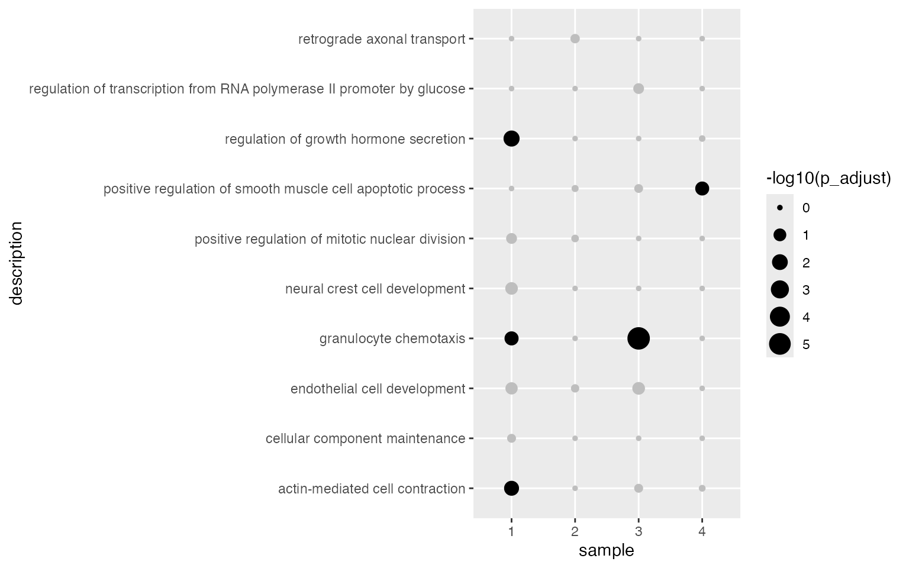
Some labels are too long. We use the helper function
wrap_text() to wrap them into multiple lines.
ggplot(tb, aes(x = sample, y = wrap_text(description, width = 50), size = -log10(p_adjust))) +
geom_point(color = ifelse(tb$p_adjust < 0.05, "black", "grey"))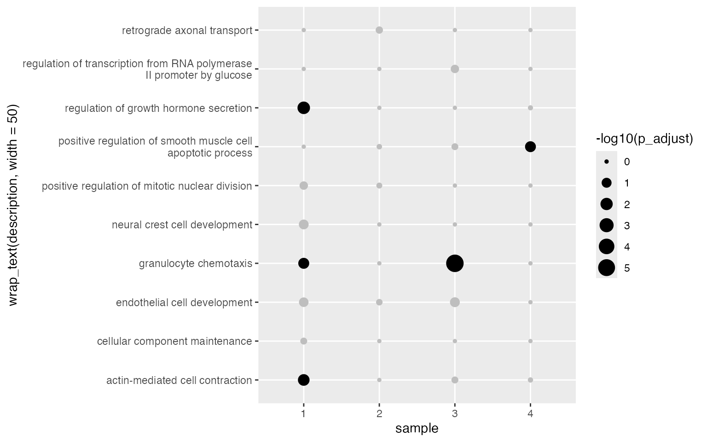
GSEA result
Single GSEA result
s = p53_dataset$s2n
s = convert_to_entrez(s)## gene id might be SYMBOL (p = 0.630 )
tb_gsea = fgsea_go(s, org.Hs.eg.db, "BP")Similarly, we can visualize NES scores of gene sets.
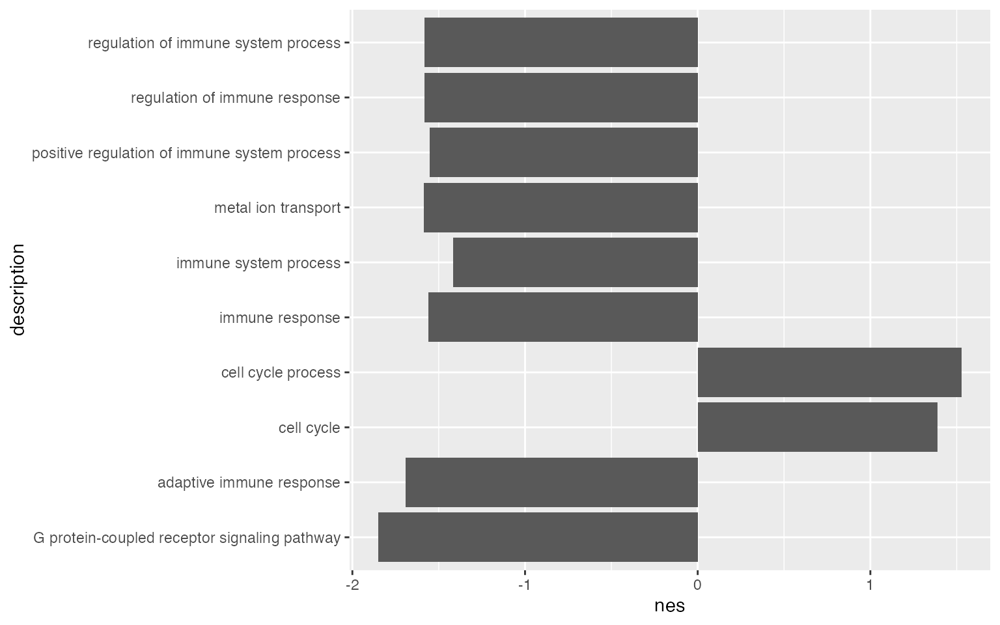
ggplot(tb_gsea[1:10, ], aes(x = nes, y = description)) +
geom_col(fill = ifelse(tb_gsea$nes[1:10] > 0, "red", "darkgreen"))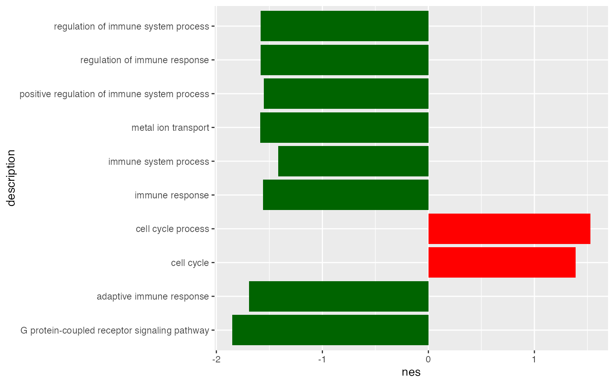
You might have seen this type of adaptation.
ggplot(tb_gsea[1:10, ], aes(x = nes, y = description)) +
geom_col(fill = ifelse(tb_gsea$nes[1:10] > 0, "red", "darkgreen")) +
geom_text(aes(x = 0 + ifelse(nes > 0, -0.05, 0.05),
y = description,
label = wrap_text(description, width = 40)),
hjust = ifelse(tb_gsea$nes[1:10] > 0, 1, 0)) +
geom_text(aes(x = nes + ifelse(nes > 0, -0.05, 0.05),
y = description,
label = sprintf("%.2e", p_adjust)),
col = "white",
hjust = ifelse(tb_gsea$nes[1:10] > 0, 1, 0)) +
theme(axis.title.y = element_blank(),
axis.text.y = element_blank(),
axis.ticks.y = element_blank())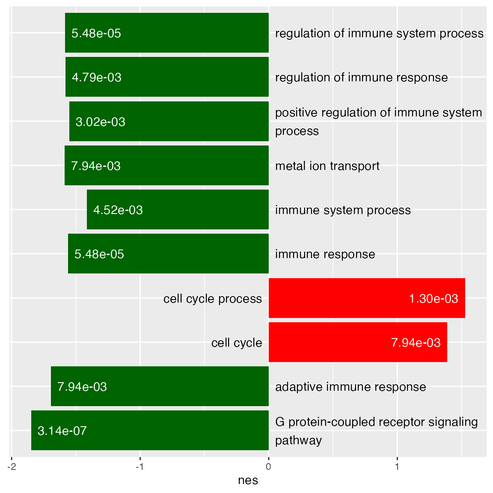
The volcano plot which is two-sided.
ggplot(tb_gsea, aes(x = nes, y = -log10(p_adjust))) +
geom_point(col = ifelse(abs(tb_gsea$nes) > 1 & tb_gsea$p_adjust < 0.05, "black", "grey")) +
geom_hline(yintercept = -log10(0.05), lty = 2) +
geom_vline(xintercept = c(1, -1), lty = 2)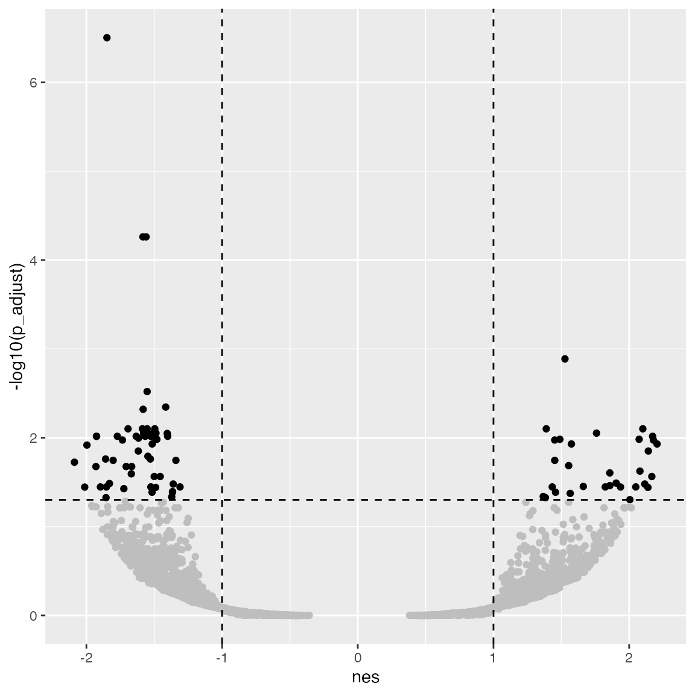
The degree of enrichment is also dependent to the gene set sizes.
ggplot(tb_gsea, aes(x = nes, y = -log10(p_adjust), color = n_gs)) +
geom_point() +
scale_colour_distiller(palette = "Spectral")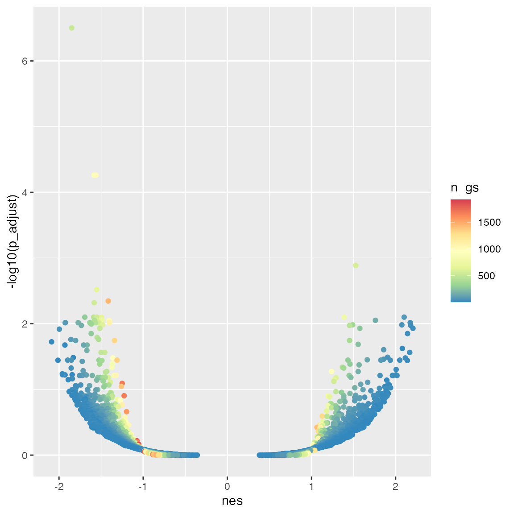
And the classic GSEA plot with the helper function
gsea_plot():
gs = load_go_genesets(org.Hs.eg.db, "BP")$gs
gsea_plot(s, c("GO:0007186", "GO:0022402", "GO:0050877"), gs)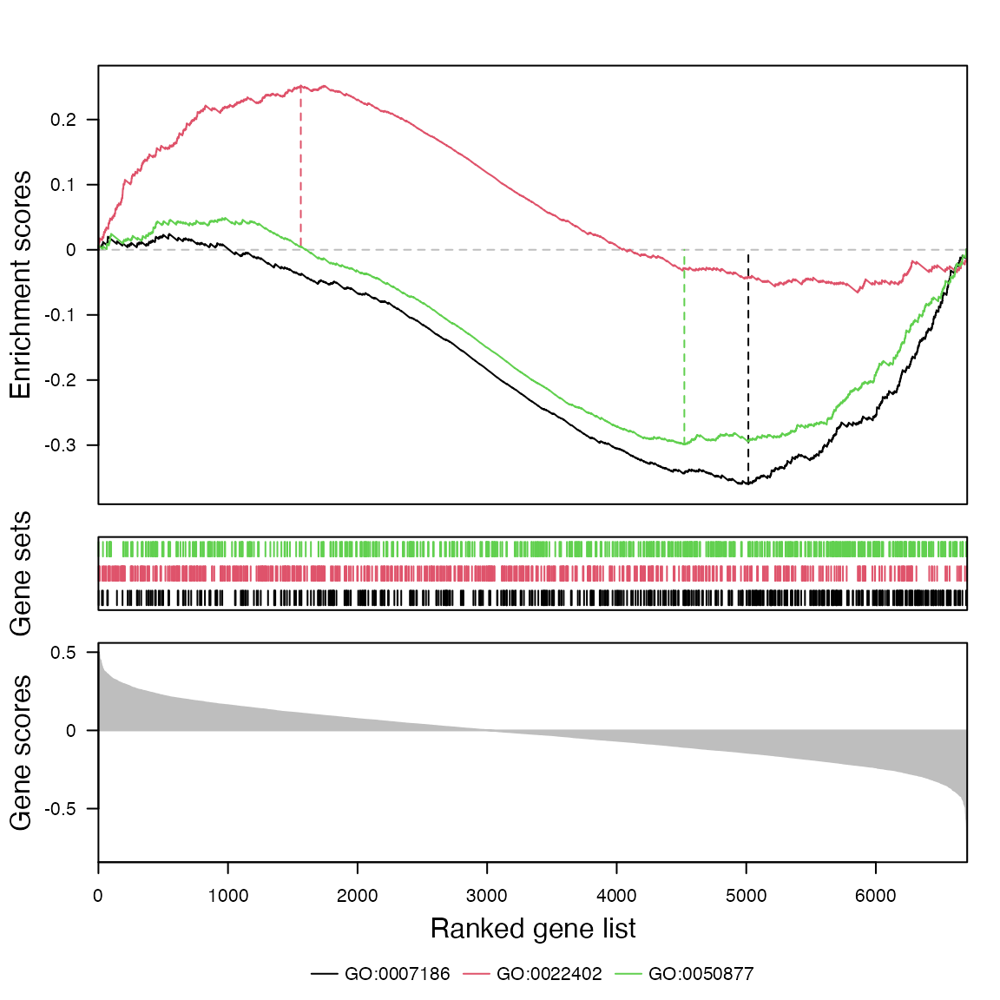